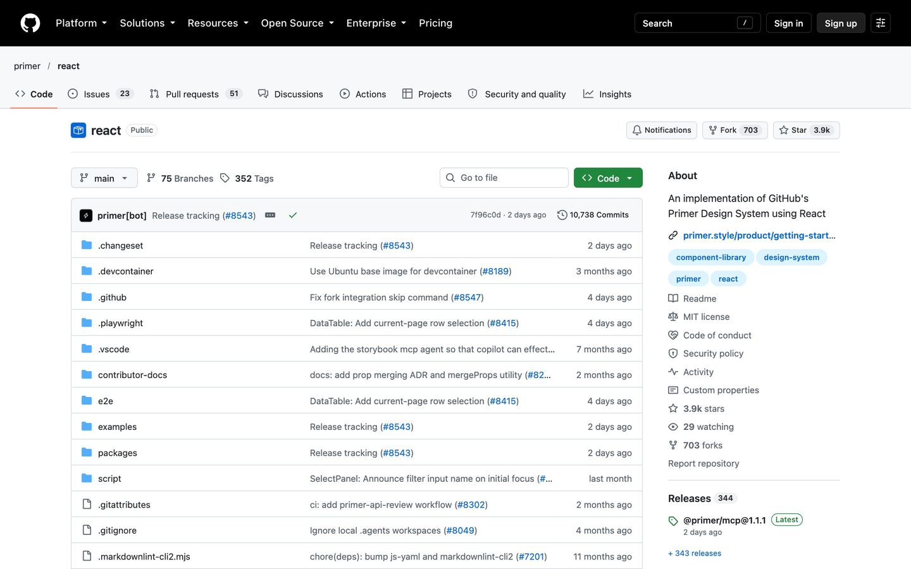
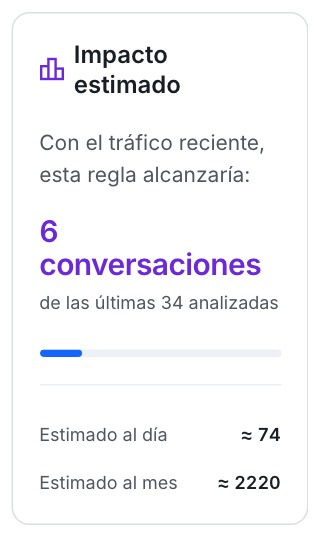
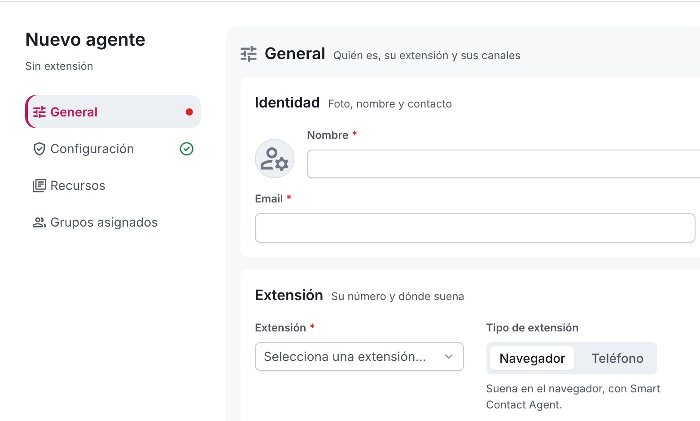
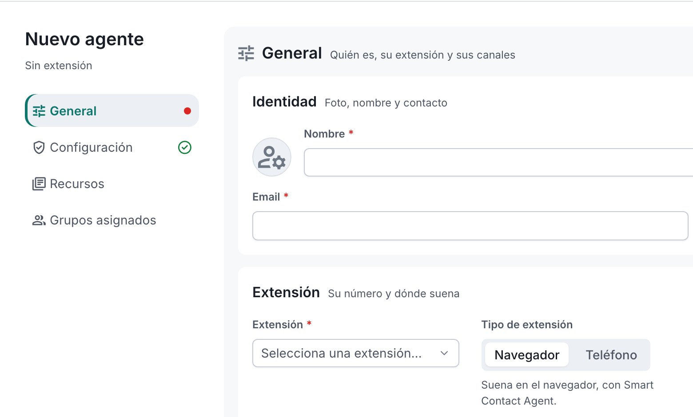
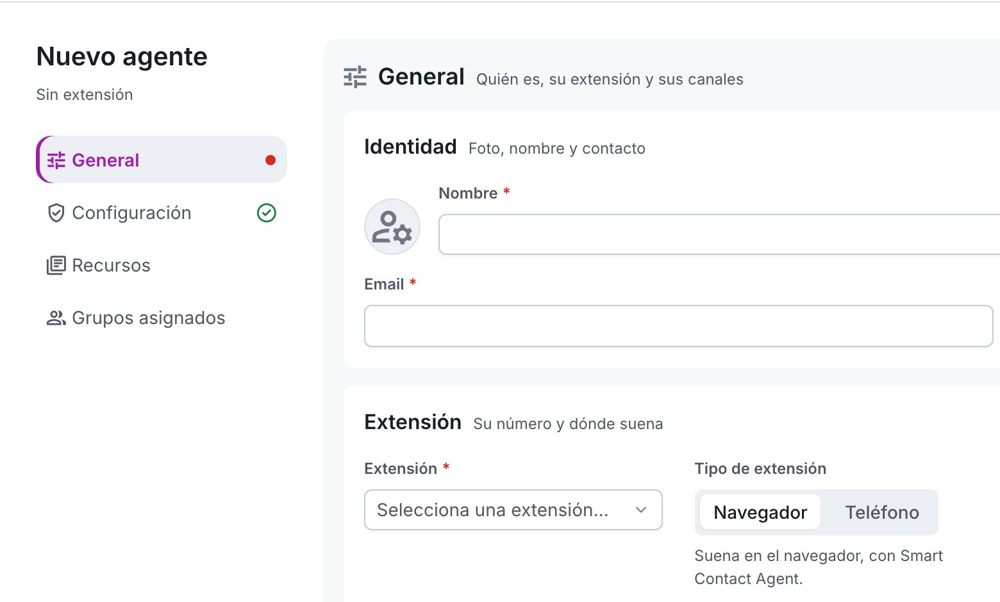

IBM CarbonSalesforceMicrosoft FluentAtlassianZendeskTwilioGenesysNotion
Botón, enlace y foco en el mismo azul. En Zendesk, Twilio y Genesys no es el color de su marca. Es lo que hace hoy nuestro tema oscuro.
Smart Contact Design System / Supervisor
El Supervisor es casi monocromo. Qué hacen GitHub y otros SaaS, qué hemos medido en nuestras pantallas y qué proponemos.
El punto de partida

de los píxeles tienen color en Reglas, Conversaciones, fichas y altas (a 1440, tema claro).
entre el botón principal y el texto de los títulos. Y ese marino es también la barra lateral y la tarjeta de resumen: el botón no es el único bloque oscuro.
La referencia: GitHub (Primer)

Repositorio público primer/react, sin sesión, a 1440. Un solo botón primario en cada página medida.
de los píxeles con color: casi todo, enlaces azules y el botón verde.
«Only use one primary Button on a page.»Guía de Button, primer.style
Otros 17 sistemas de diseño
Botón, enlace y foco en el mismo azul. En Zendesk, Twilio y Genesys no es el color de su marca. Es lo que hace hoy nuestro tema oscuro.
Casi negro o marino, y el azul queda para los enlaces. Es nuestro tema claro de hoy. Funciona cuando el botón es el único bloque oscuro.
Aquí estamosSu color de marca, salvo GitHub, que usa el verde de «éxito».
Ninguno. Sería identidad propia, no un patrón que el usuario ya conozca de otras herramientas.
Un botón principal por vista: lo escriben 10 de los 17. Atlassian: «compiten por la atención».
La IA sin color propio en 7: icono, etiqueta o brillo en sus colores de siempre. Twilio: «que sea nueva no obliga a inventar patrones».
GitLab pasó a neutro en junio de 2026 para que, cuando aparezca color, se sepa por qué.
Tokens, código y guías públicas de cada sistema, consultados el 18/10/2026. Intercom y Talkdesk no publican el suyo.
Lo que descartamos

Hoy, en código: la frase del impacto del constructor de reglas, en violeta desde el 17/10.
Qué tonos quedan libres



El cian de la marca
Un texto normal necesita 4,5:1 (WCAG AA). Contraste calculado con los valores del Kit y medido en pantalla.
Más allá del cian
| Color | Claro y oscuro | Texto | Contra la página | Veredicto | |
|---|---|---|---|---|---|
| Marino (hoy) | GuardarGuardar | 14,96/8,24 | 14,96/9,25 | Hoy | Es el marino de los títulos y de la barra lateral. |
| Azul sky 600 | GuardarGuardar | 6,80/8,24 | 6,80/9,25 | Recomendable | El más vivo de los que pasan; el azul del enlace y de nuestro oscuro. |
| Cian 700 | GuardarGuardar | 5,64/11,69 | 5,64/13,13 | Recomendable | El cian de la barra, oscurecido. Lejos de marca y estados; apagado. |
| Teal 700 | GuardarGuardar | 5,47/11,98 | 5,47/13,45 | Con matices | A 37° del verde de éxito: junto a un ✓ puede leerse «hecho». |
| Cian 400, texto marino | GuardarGuardar | 8,55/8,55 | 1,75/11,38 | Con matices | En claro casi no se separa del blanco, y como letra no pasa. |
| Verde 700 | GuardarGuardar | 5,02/10,17 | 5,02/11,42 | Descartado | Es el verde de «éxito». |
| Naranja 700 | GuardarGuardar | 5,18/7,83 | 5,18/8,79 | Descartado | A 11° del peligro; con daltonismo, casi igual. |
| Violeta 700 | GuardarGuardar | 7,10/6,51 | 7,10/7,31 | Descartado | Firma de interfaz hecha con IA; con deuteranopía, el enlace. |
Contraste WCAG, en claro / en oscuro. El texto pide 4,5:1; el botón contra la página, 3:1. Daltonismo y viveza, en la página del Lab.
Las opciones, en pantallas reales
 HoyCian 700
HoyCian 700
Texto blanco sobre cian 700 en claro; en oscuro, cian 300 con texto oscuro (11,69:1).
Lo que implica en los tokens
No.
button/primary en Figma; el generador crea sus variables y el preset las lee. Un fichero de código.--sc-cmp-button-primary-*Las reglas que proponemos
Siguiente paso
Los flujos de grupos y agentes están pasando a Figma. Cuando acaben, el cambio va en este orden:
button/primary, solo para los botones.Lo que hay que decidir
O dejar el marino y que sea el único bloque oscuro de la pantalla, como GitLab y Vercel. Para tocarlo todo en vivo: la página del Lab en sc-docs.